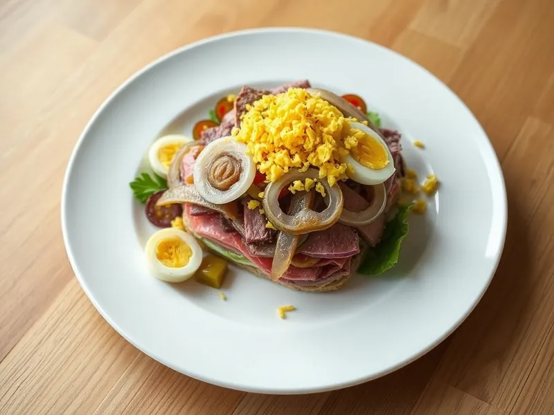

Салат «Мужской каприз» с говядиной и маринованным луком
Сытный слоёный салат из отварной говядины, маринованного лука, яиц и сыра
130 мин6 порц.398 ккал на порциюБ 23 · Ж 31 · У 6Русская кухня
Открыть в приложении: порции, таймеры, список покупок
Продукты на 6 порц.
- Говядина400 г
- Лук репчатый2 шт
- Уксус 9%2 ст. л.
- Сахар2 ч. л.
- Яйцо куриное4 шт
- Сыр твёрдый120 г
- Майонез120 г
- Соль1 ч. л.
- Перец чёрный молотыйпо вкусу
- Вода2500 мл
Как готовить
- Опустите говядину в кипящую воду, снимите пену и варите на слабом огне 1,5 часа, пока мясо не станет мягким. За 20 минут до конца посолите. Остудите в бульоне.
- Лук нарежьте тонкими полукольцами, залейте смесью уксуса, сахара и 100 мл тёплой воды и оставьте на 20 минут. Отожмите.
- Яйца сварите вкрутую 10 минут, остудите и натрите на крупной тёрке. Сыр натрите на мелкой тёрке.
- Мясо нарежьте тонкой соломкой поперёк волокон.
- Выложите слоями: лук, говядина, яйца, сыр. Каждый слой, кроме сыра, слегка поперчите и смажьте майонезом.
- Дайте салату пропитаться в холодильнике 1 час.
Совет. Режьте говядину строго поперёк волокон, тогда она получится нежной. Вместо говядины подойдёт отварная свинина или оставшееся мясо из бульона.